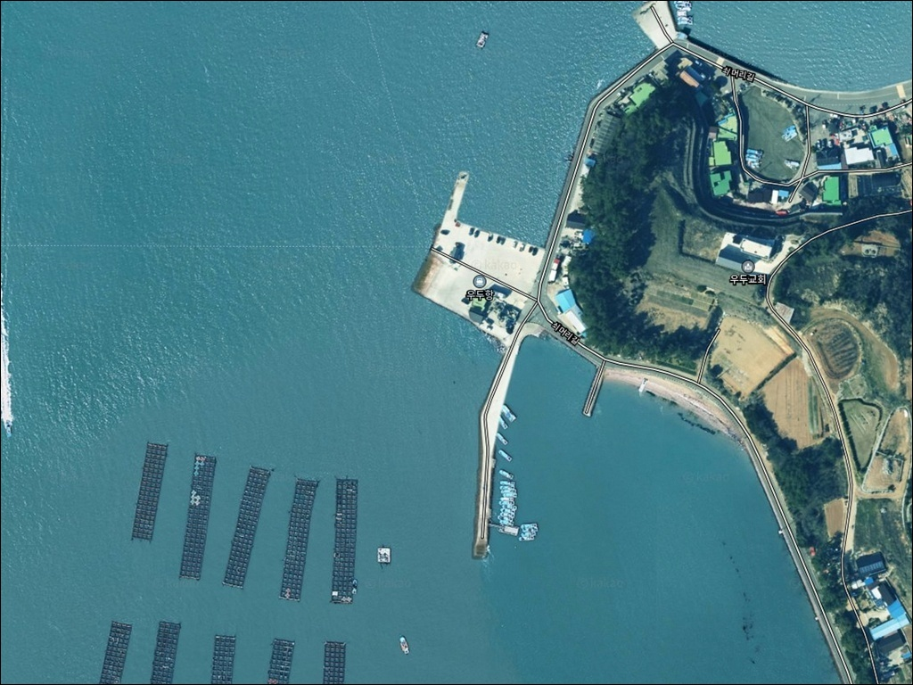
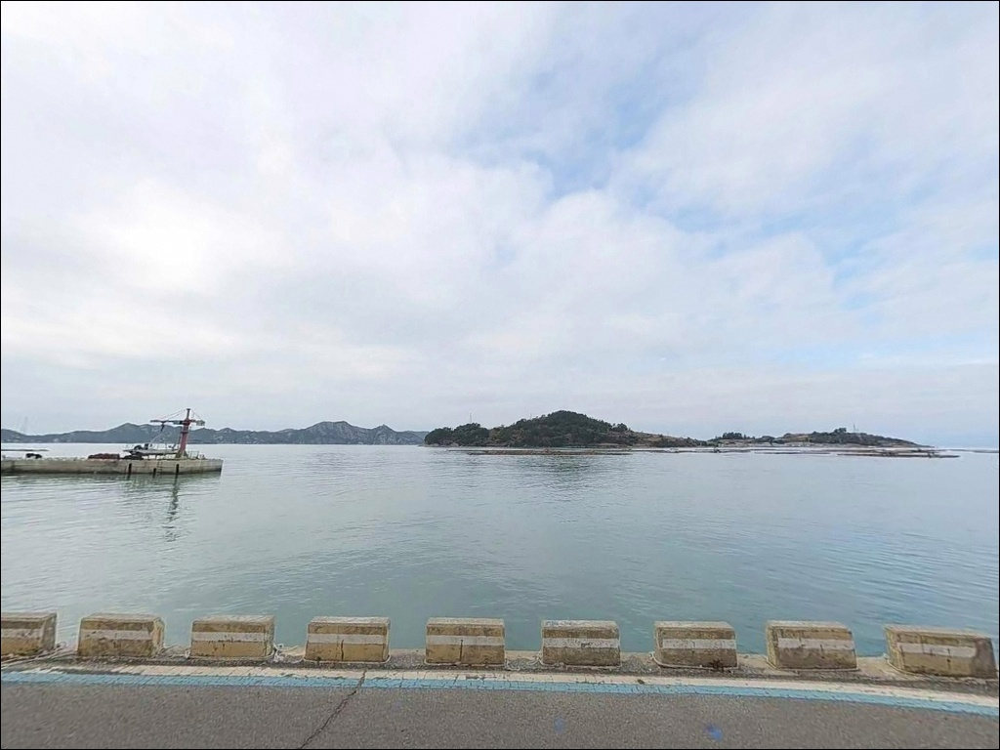
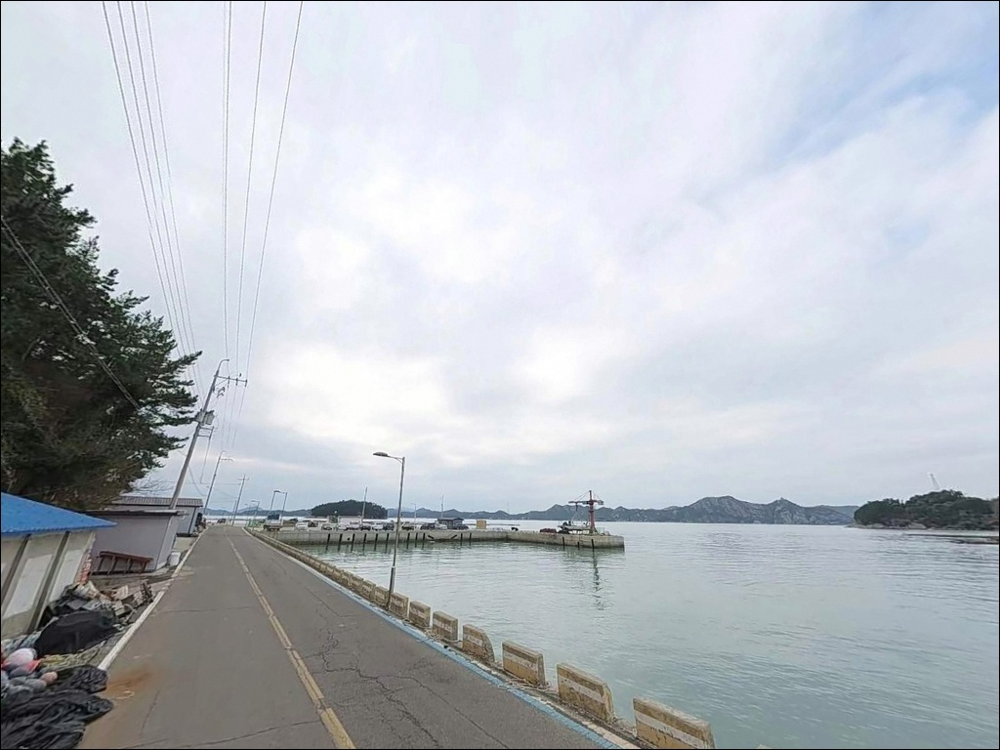
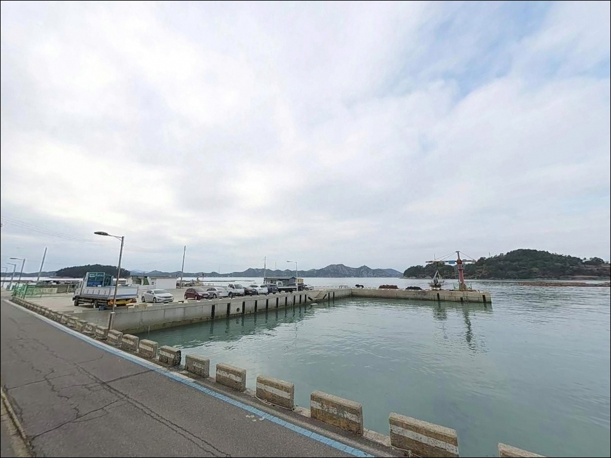
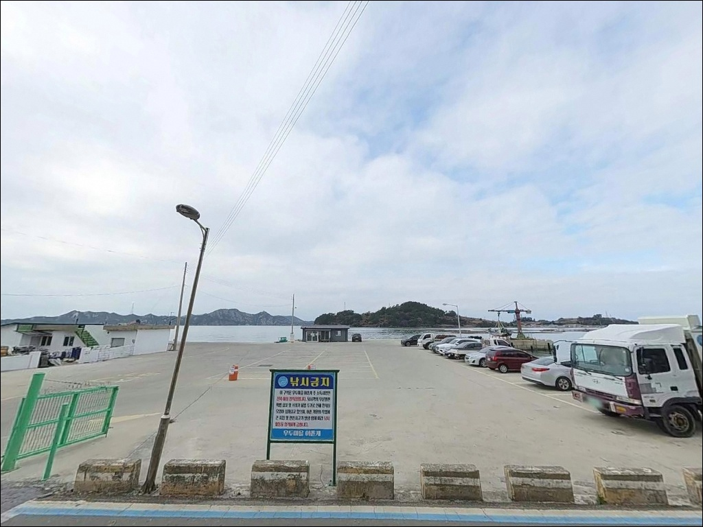
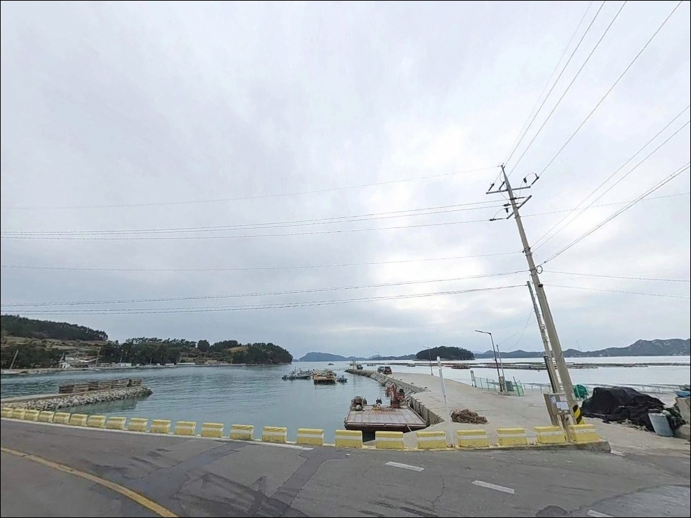
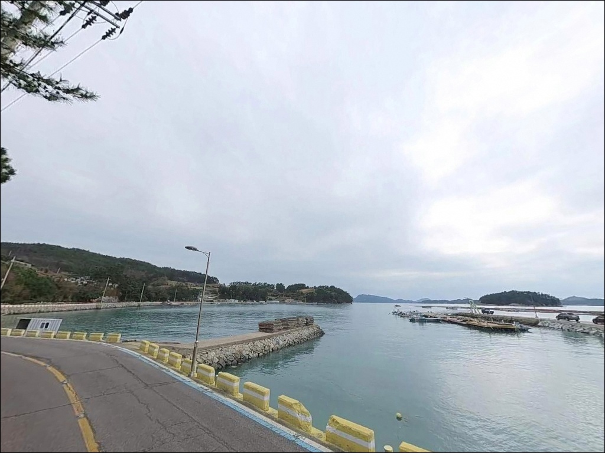
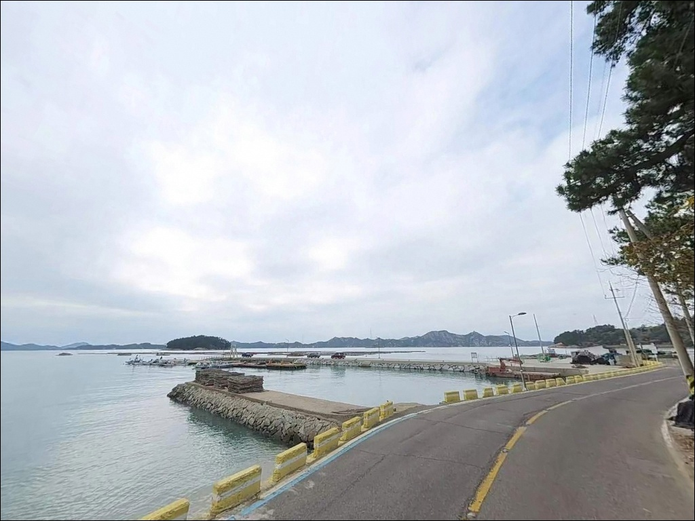
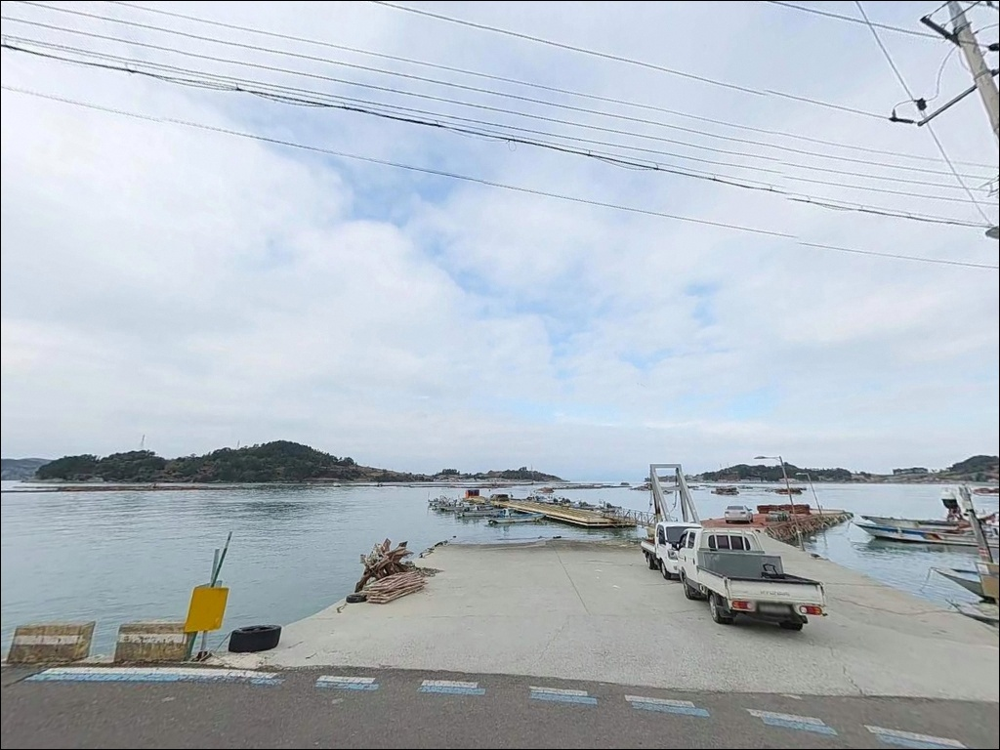

여객선 운항 공백 잡았을 때, 거금도 우두항 날물 조류에 이어진 감성돔 입질
이 페이지에는 광고(제휴 링크 포함)가 있으며, 광고 링크를 통해 구매하면 운영자가 판매 수익 또는 수수료를 받을 수 있습니다. 포인트 사진: 카카오맵 스카이뷰·로드뷰. 이 페이지의 지도·사진 이미지는 카카오맵의 실제 서비스 이미지와 다를 수 있습니다.


포인트 안내
우두항(진몰방파제)
전남 고흥군 금산면 신전리 678-3
여객선이 드나드는 항구에서
아무 자리에나 낚싯대를 세우면
입출항 시간에 그 자리를 비워야 합니다.
우두항은 금당도·비견도 행 연안여객선이
하루 수 차례 기항하는 항으로,
선착장 구역과 낚시 가능 구역을 먼저 구분하는 것이
방문 전 첫 번째 판단입니다.
이 글은 우두항(진몰방파제)의
진입 환경, 차박 여건, 낚시 지형 조건,
방식별 공략 구간에 집중합니다.
특정 어종 조황 단정이나
시설 운영 여부 보장은 이 글의 범위에 포함되지 않습니다.

1. 진입 동선과 차량 접근 환경
거금도는 거금대교(소록도~거금도, 2011년 개통)로
육지와 차량 통행이 가능합니다.
우두항은 섬 전체를 일주하는 해안도로에서
직접 분기하는 구조로, 진입로 전 구간이 포장도로입니다.
급경사 구간이 없어 대형 SUV나 캠핑카도
무리 없이 진입하는 수준입니다.
항 내부 회차 공간은 넉넉합니다.
선창 앞에 넓은 포장 공터가 조성되어 있어
대형 차량도 방향 전환이 자유롭고,
수십 대 동시 주차가 가능한 면적을 갖추고 있습니다.
여객선 이용객·산행객을 위한 공용 주차장 형태로
운영되는 구역입니다.
여객선 배 시간 전후로 차량이
몰렸다 빠지는 패턴이 반복됩니다.
낚시 목적의 방문이라면
운항 시간 외 시간대에 도착하면
주차 공간 확보에 어려움이 없습니다.

2. 차박 환경과 야간 체류 여건
우두항은 여객선 터미널 조명이 상시 작동하는 구조로,
야간에도 선창 주변 밝기가 일정 수준 유지됩니다.
마을 밀집도는 낮은 편이며,
여객선 막배 운항이 종료된 시간 이후에는
차량 통행이 급격히 줄어 비교적 조용한 환경으로
전환됩니다.
낮 시간대에는 금당도·비견도를 오가는
관광객과 트레킹 인원이 항을 드나듭니다.
완전한 정숙 환경을 원한다면 맞지 않지만,
낚시 후 단기 야영 목적이라면
배 운항 종료 이후 심야 시간대부터 이른 아침까지
체류하는 방식이 현실적입니다.
거금도 일주도로 방향 바람이 해안선을 따라
들어오는 구조라 기상 악화 시 바람 영향을 받습니다.
늦가을 이후 겨울 시즌에는
방풍 대비를 갖추고 진입하는 것이 기본입니다.


3. 주변 편의시설 및 인프라 현황
우두항에서 금산면 소재지 방향으로
차량으로 이동하면 하나로마트·식당·약국 등
기본 인프라를 이용할 수 있습니다.
항 직접 반경에는 편의점 수준의 확정 시설은
없으므로 식수·얼음·밑밥은 출발 전 준비가
현실적인 대응 방식입니다.
거금대교를 건너 녹동항까지 약 9km 거리입니다.
낚시 용품 구입, 밑밥 확보, 대형 마트 이용은
녹동 일대 인프라를 활용하는 것이 효율적입니다.
응급 상황 발생 시에도
녹동 방면 의료시설 이용이 가능한 동선입니다.
2023년 어촌뉴딜300 사업이 준공되어
항만 시설 자체는 방파제·부잔교·물양장·다목적회관·어민쉼터가
완비된 상태입니다.
낚시 발판과 항만 시설 수준은 정비된 편입니다.

4. 여객선 운항 일정을 중심으로 한 방문 준비
우두항 방문에서 가장 먼저 확인할 것은
여객선 운항 시간표입니다.
금당도·비견도 행 연안여객선이 하루 수 차례 기항하며,
접안 시간대에는 선착장 전면 수역이
선박 통항 구역으로 전환됩니다.
이 시간 동안은 선착장 주변 낚시를 피해야 합니다.
운항 종료 이후 시간대는
선착장 주변 자리도 활용이 가능한 구조입니다.
바다타임에서 우두항(진몰방파제) 기준
물때를 미리 확인하고,
날물 조류가 활성화되는 타이밍과
여객선 운항 공백 시간대를 겹쳐 계획하면
낚시 효율이 높아집니다.
거금수도 조류는 창낙조 유속이 비교적 빠른 해역입니다.
기상청 해양 예보는 출조 당일 아침 재확인이 기본이며,
외항 테트라포드 구간은 경사가 급하므로
구명조끼와 안전 장화 착용을 갖추고 진입합니다.

5. 지형 기반 낚시 여건 분석
우두항은 길게 뻗은 메인 방파제와
내항 선착장으로 구성된 복합 구조입니다.
방파제 외항 끝단 기준 수심은
8~12m 이상으로 깊게 형성되며,
내항 쪽도 5m 내외 수심을 유지해
들물과 날물 관계없이 낚시가 가능한 구조입니다.
외항 방파제 끝단은 조류가 강하게 흐르는
본류대와 맞닿아 있습니다.
방파제 외항은 테트라포드로 이루어져 있으며
슬로프 구간에서 수심이 급변하는 지점이 형성됩니다.
이 수심 변화 구간은
원투 채비를 활용한 바닥 공략에 유효하고,
루어를 흘리기에도 조류 조건이 살아 있는 곳입니다.
내항 석축 구조물 주변은
야간 찌낚시 자리로 안정적인 발판을 제공합니다.
우두항 북쪽 약 967m 거리에 위치한
우두마을 곶부리는 조류 합류 지점입니다.
수심 변화가 있는 이 구간은
루어·에깅 접근에 유리한 열린 지형으로,
방파제와 병행해 탐색해볼 가치가 있는
추가 포인트입니다.
최신 조황은 출조 전 "거금도 우두항 낚시" 또는
"금산면 방파제 조황" 키워드로 검색해 확인하십시오.


6. 거금도 우두항에서 조류를 활용하는 낚시 방식
이 포인트에서 가장 잘 맞는 방식은
감성돔을 노리는 릴찌낚시입니다.
날물 조류를 타는 흘림 채비 구조가
항 입구에서 외해로 열린 이 지형과 맞고,
특히 가을 시즌에 조과가 집중되는 경향이
이 해역에서 나타납니다.
원투낚시도 이 포인트 구조에 잘 맞습니다.
방파제 외항 먼 지점에는 사질대 구간이 있어
도다리·보리멸·붕장어 등 바닥 어종을
기대해볼 수 있는 지형 조건입니다.
조류가 느려지는 정조 타이밍에
채비를 원거리로 보내 바닥을 탐색하는 방식이
기본 운용법입니다.
에깅과 볼락 루어도 시도할 수 있는 구조입니다.
거금도 해역 전반에서 갑오징어와 무늬오징어 에깅
반응이 확인되며,
선착장 석축 주위와 우두마을 곶부리 방향의
테트라 구조물 주변이
야간 볼락 루어 접근에 유리한 구간입니다.
소형 지그헤드 채비로 암초 경계를 천천히 탐색하는
방식이 이 지형에 어울립니다.

7. 대안 포인트와 플랜 B 동선
우두항이 여객선 운항으로 자리가 여의치 않거나
바람 방향이 불리할 때는
신양항 방파제가 첫 번째 대안입니다.
우두항에서 약 1.4km 거리로
방파제 구조가 확인된 가장 근거리 포인트입니다.
풍향에 따라 우두항과 신양항 중
바람이 차단되는 쪽을 선택하는 전략이 유효합니다.
거금도 남단 오천항 방파제는
약 10.6km 거리로
방파제와 갯바위가 결합된 복합 구조입니다.
현지 낚시점 정보 기준으로
거금도 남·동쪽 포인트 조황이 더 활발하다는
경향이 있으므로,
날씨·풍향에 따른 이동 후보로 고려할 만합니다.
거금수도 건너편 녹동항은 약 8.9km 거리입니다.
낚시 용품 구입과 선상낚시 출조 거점이 집중된 곳으로,
방파제 낚시도 가능한 구역이 있습니다.
거금도 기상이 악화될 경우
본토 방파제 이동 플랜B로 활용하면 됩니다.

여객선 일정과 물때를 맞추면
우두항(진몰방파제)이 달리 보입니다
릴찌낚시나 원투낚시를 즐기는 낚시인이라면
우두항의 지형 조건은 잘 맞습니다.
방파제 외항의 깊은 수심과 조류 흐름,
내항의 안정적인 발판이 복수 방식으로
동시에 운용 가능한 구조를 만들어주기 때문입니다.
거금수도 조류가 흐르는 해역 특성상
날물 타이밍을 잘 잡으면
발품에 비해 기대치가 높아지는 포인트입니다.
반면 여객선 운항을 모르고 가면
선착장 인근 자리를 확보하기 어렵고,
성수기 낮 시간대에는 관광객 차량이
주차 공간을 점유하는 상황도 생깁니다.
여객선 시간표 확인, 물때 판단, 날물 타이밍 계산,
이 세 가지를 갖추고 가는 것이
이 포인트를 제대로 쓰는 방식입니다.
2023년 어촌뉴딜300 사업으로
항만 시설이 깔끔하게 정비된 지금,
낚시와 차박을 함께 계획한다면
거금도에서 발판이 좋고 진입이 편한 거점으로
우두항을 기점 삼아 섬 일주 동선을 짜는 것도
좋은 방법입니다.